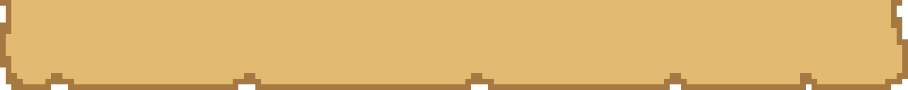
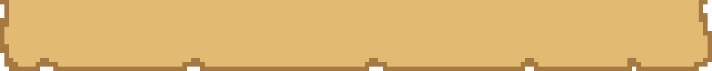

Exploration in Krucia
The seas of Krucia are open from the beginning. Your map starts blank and fills in as you discover islands, ports, landmarks, and hazards. There are no locked areas, only natural dangers such as storms, reefs, fog, and enemy ships.
Quests
Quests can appear in many ways:
- NPC interactions: tavern keepers spreading rumors, sailors offering odd jobs, townsfolk with local troubles, or personal requests from crew members.
- World events: shipwrecks, drifting barrels, or notes washed up on shore.
- Factions: tasks that can change their strength, territory, and relationship with you.
- Exploration triggers: discovering ruins, entering uncharted seas, or stumbling on mysterious artifacts.
Quest types include:
- Combat: raiding ships, defending settlements, escorting vulnerable ships.
- Trade and delivery: transporting valuable goods, smuggling contraband, or outpacing rival merchants.
- Exploration: investigating ruins, mapping new islands, or charting dangerous waters for pay.
- Faction influence: choosing sides in conflicts, tipping the balance of power.
- Personal stories: crew members with unique requests or problems to solve.
Charting the Seas
As you sail, your discoveries are added to your map. Ports, landmarks, and hazards only appear once you've encountered them. Charting is a way to track progress and make navigation easier, and it also ties directly into quests and treasure hunts.
Treasure
Treasure hunting requires piecing together clues that often appear incomplete at first. Map fragments must be combined to reveal full routes. Riddles and carvings point toward landmarks, requiring you to match hints with geography. Songs and rumors contain directions or coded references hidden in their phrasing. Environmental signs such as unusual rock formations, star patterns, or symbols carved into wood all serve as breadcrumbs on the trail.
Solving treasure clues can send you across multiple islands and through different types of environments before the final cache is revealed. The challenge is not only finding the right place but recognizing what the clue is actually pointing to.
Landmarks
Landmarks are major points of interest across Krucia, serving as both navigation tools and gameplay features. They can mark quest locations, hide treasure, or act as hubs of activity.
Natural landmarks include volcanoes that alter nearby seas, sprawling coral reefs, towering cliffs, whirlpools, and unique biomes. Man-made landmarks feature ancient forts, toppled statues, star shrines, and abandoned harbors. Dynamic landmarks such as ship graveyards grow after battles, while temporary camps may disappear on later visits.
Charting landmarks gives structure to your map, creating recognizable points to navigate by and anchoring quests, treasures, and story events.